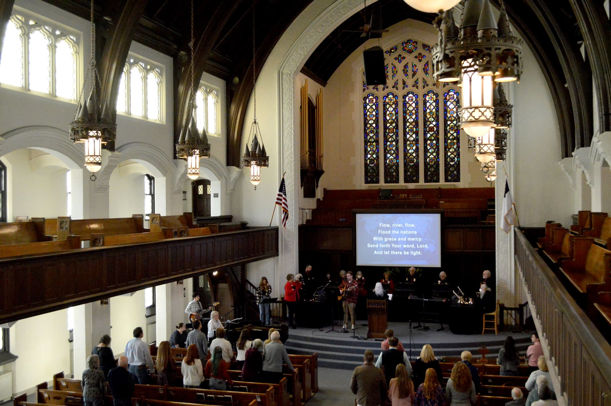
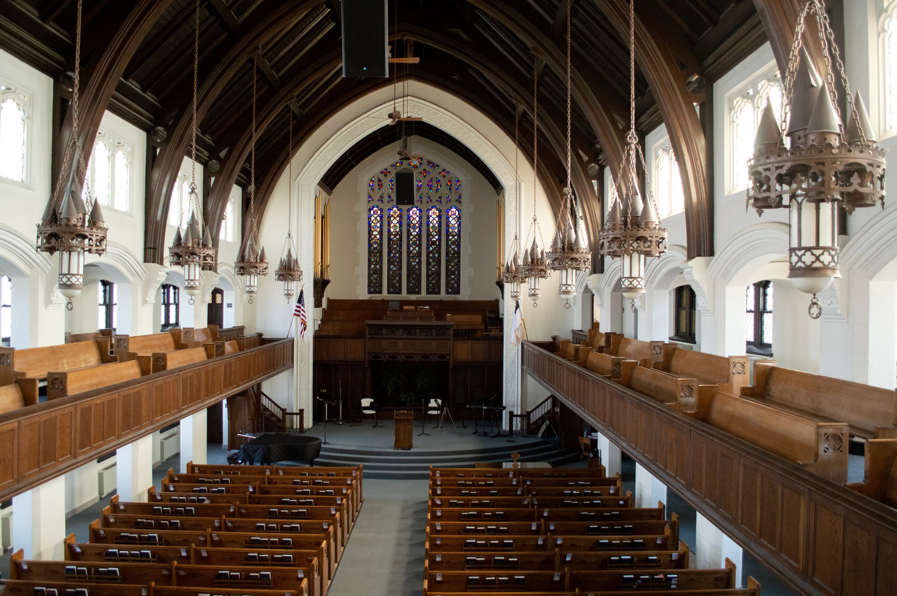
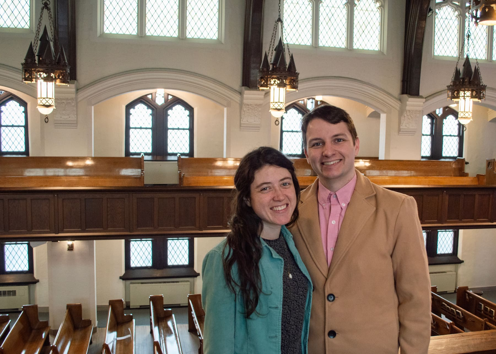
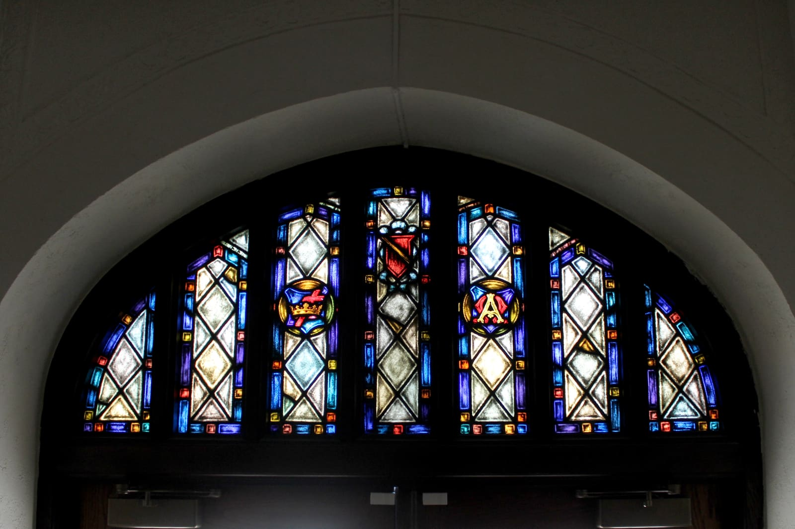
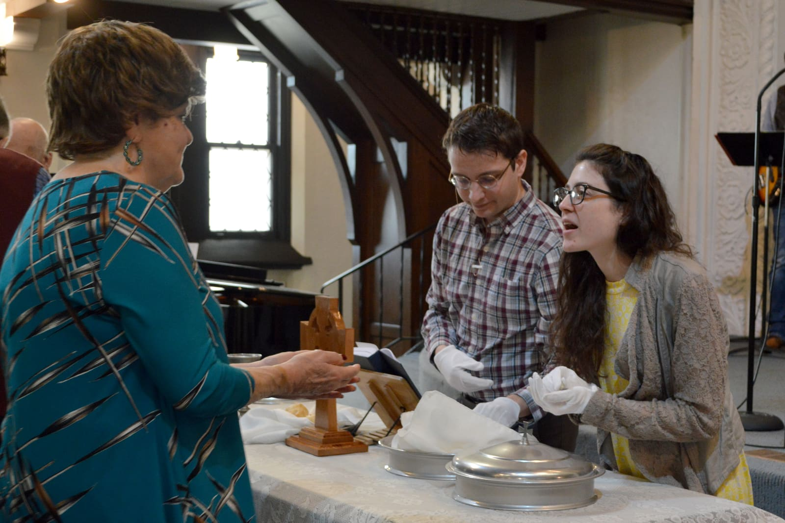

This Sunday · Worship at 10:45 am
We’re a Spirit-led people gathered to join Christ’s presence in our community.
Worship is at 10:45 each Sunday. Hymns, the choir, and a sermon, then coffee in the fellowship hall.

At each entrance, all ages are invited to check in with a greeter. The greeters can direct you where you need to go and answer questions you may have.
Plan a visit →
We hold to the Bible, to baptism on a person’s own profession of faith, and to the freedom of each church to govern itself.
Our beliefs → How we serveSunday school, music, youth, and the citySunday school, music, youth, and work with partners across Muncie and beyond.
Ministries → Where we’ve beenDowntown since 1859, in this building since 1929The congregation has met in downtown Muncie since 1859, and in this building since 1929.
Our history →From the parking lot to the last hymn, in the church’s own words.
At each entrance, all ages are invited to check-in with a greeter.
The Greeters can direct you where you need to go, and answer questions you may have.
Children will receive a name tag for nursery or children’s church.
For children ages 3 and younger, nursery care is available throughout the service.
Doors, parking and access →
We believe that Christ is the head of the church, our Great Shepherd. Pastors serve as under-shepherds, under Christ, called by God and the congregation to serve Christ’s church.
Meet the staff →

The tower, the oak pews and the stained glass have been in daily use for more than a century. The building was completed in 1929 and has been on the National Register of Historic Places since 1988.
The building’s story →Some Christmas events invite you to sit back and listen, but Messiah Sing-In & Carols is a time to join in and be a participant in the music.
Music March 3, 2026 Upcoming Events at FBC Muncie: Lent & Easter 2026We are grateful God is at work. Here is a look at what is coming up at First Baptist Church Muncie from now through Easter Sunday.
Events December 8, 2025 Blue Christmas? Hope & Mental Health for the HolidaysIf Christmas feels heavy this year, you are not alone.
CareGifts pay the staff, keep the building open and fund the work this church does in Muncie.
Give through Church Center